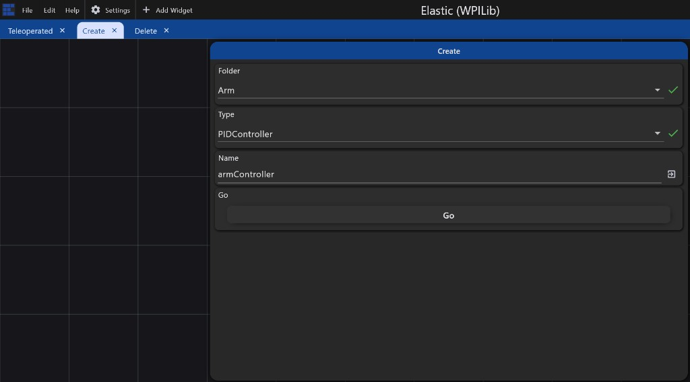
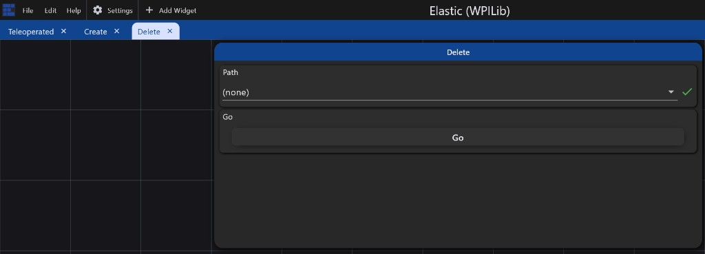

Create and delete constants
Use the Elastic Create and Delete tabs in debug mode. Always Save afterward to promote into
robot-config.json.
Debug must be on (
/Config/DebugMode, not on FMS). Create/Delete panels only
apply structure changes in debug.
Create
- Open the Create tab in your Elastic layout.
-
Choose Type (
/Config/Create/Type) — Folder, double, int, PIDController, etc. -
Choose Folder (
/Config/Create/Folder) —(root)or a nested folder path likeClaw/Intake. -
Enter Name (
/Config/Create/Name) and submit if the widget requires it. -
Flip Go (
/Config/Create/Go) on. The robot creates a zero/empty default of that type (or an empty folder) and clears Go.

Arm /
PIDController / armController)
Delete
- Open the Delete tab.
-
Choose Path (
/Config/Delete/Path). Use(none)to do nothing. - Flip Go. The path is removed from the live document / cache. Deleting a folder removes all children.
-
Press Save on the Teleoperated tab to promote into
robot-config.json.

(none) is a no-op)
You can also add entries by editing robot-config.json and deploying — useful
for large trees or CI.